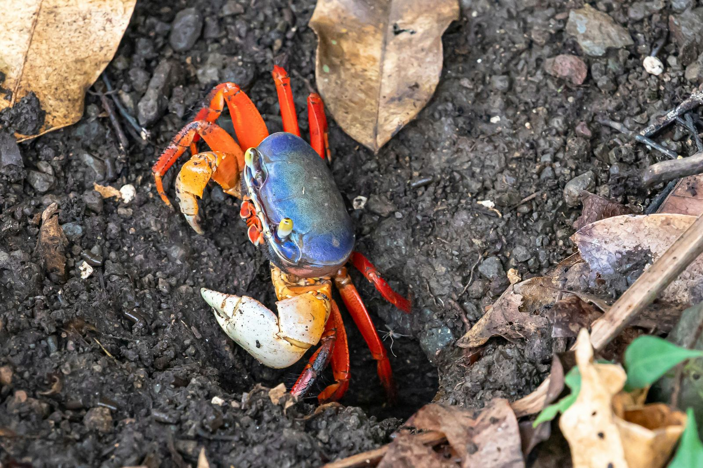

Discover the threat of the invasive blue crab in Italy. Learn about its origins, impact on the ecosystem, and measures taken to combat this environmental menace.
Il Mediterraneo è diventato il palcoscenico di un'invasione da parte di una strana specie: il granchio blu. Questo crostaceo, originario delle acque atlantiche americane, è diventato un vero e proprio problema nelle nostre acque, causando danni all'ambiente e all'economia locale. Come è arrivato qui? Beh, sembra che sia stato trasportato a bordo di navi cargo, probabilmente senza volerlo, durante i loro viaggi trasatlantici.

Ma che cosa rende così dannoso questo granchio blu? Beh, prima di tutto è un mangione senza rimorsi, pronti a divorare praticamente tutto ciò che incontra: vongole, cozze, altri crostacei, e persino pesci appena nati. La sua prolificità è impressionante, con le femmine capaci di deporre fino a 2 milioni di uova all'anno! Questa voracità, combinata con l'assenza di predatori naturali nel nuovo ambiente, lo rende un vero e proprio invasore alieno, capace di mettere in pericolo gli ecosistemi locali.
In Italia, il danno economico causato da questa invasione è già considerevole, soprattutto per il settore ittico. Si parla di circa 100 milioni di euro, soprattutto a causa della predilezione del granchio blu per le vongole. È una situazione seria che richiede azioni concrete.
Per fortuna, il governo italiano ha preso provvedimenti. Ha stanziato fondi per aiutare le cooperative della pesca a gestire la popolazione di granchi, e ha persino aperto una stagione straordinaria di pesca per cercare di ridurne il numero. Le iniziative hanno già dato risultati, con oltre 326 tonnellate di granchi raccolte solo in Veneto.

Il granchio blu potrebbe sembrare innocuo, ma è diventato un vero e proprio problema per l'Italia. È un chiaro esempio di come anche le azioni più banali possano avere conseguenze negative sull'ambiente. Ma con determinazione e azioni mirate, possiamo affrontare questa sfida e proteggere i nostri mari e la nostra economia.
fonte: Cos'è il granchio blu che sta invadendo l'Italia
Parole Chiave
| Granchio | Un animale con una corazza che vive nell'acqua e ha pinze per afferrare il cibo. |
| Invasivo | Un animale o una pianta che non è originario di un luogo e che può danneggiare l'ambiente in cui si trova. |
| Specie | Un tipo di pianta o animale che ha caratteristiche comuni. |
| Mediterraneo | Il mare che si trova tra l'Europa e l'Africa. |
| Ambientale | Qualcosa che riguarda l'ambiente, come l'aria, l'acqua, o le piante e gli animali che vivono in un luogo. |
| Ecosistema | L'insieme delle piante, degli animali e dell'ambiente in cui vivono e interagiscono. |
| Azione | Qualcosa che una persona fa. |
| Danneggiare | Fare male a qualcosa o qualcuno. |
| Emergenza | Una situazione grave che richiede un'azione immediata. |
| Noncuranza | Non prestare attenzione o cura a qualcosa o qualcuno. |
| Ripetuto | Qualcosa che accade più di una volta. |
| Acqua | Un liquido trasparente che si trova nei fiumi, nei laghi e nei mari. |
| Viaggio | Andare da un luogo all'altro, di solito usando un mezzo di trasporto come una nave, un aereo o un treno. |
| Filtrare | Passare attraverso qualcosa per rimuovere le particelle indesiderate. |
| Fondale | Il fondo del mare o di un fiume. |
| Nave | Un grande veicolo che può navigare sull'acqua e trasportare persone o merci da un luogo all'altro. |
| Vongola | Un tipo di mollusco a forma di conchiglia che vive nell'acqua salata e che può essere mangiato. |
| Danno | Il male o il danno che qualcosa o qualcuno ha subito. |
| Economico | Relativo all'economia, che riguarda il denaro e i soldi. |
| Settore | Una parte di un'attività o di un'industria. |
| Ittico | Relativo ai pesci o alla pesca. |
| Fedagripesca | Una organizzazione che rappresenta e promuove gli interessi dei pescatori in Italia. |
| Stanziare | Assegnare una certa quantità di denaro o risorse a qualcosa o qualcuno per uno scopo specifico. |
| Cooperativa | Un'azienda o un'organizzazione di persone che lavorano insieme per ottenere vantaggi comuni, come la produzione o la vendita di beni o servizi. |
| Controllo | La gestione di una situazione o di un oggetto per garantire che funzioni correttamente o che si comporti in modo sicuro. |
| Popolazione | Il numero di persone o animali che vivono in una certa area o luogo. |
| Raccolto | La quantità di qualcosa che viene raccolta, come cibo o prodotti agricoli. |
| Veneto | Una regione situata nel nord-est dell'Italia. |
| Pesca | L'attività di catturare pesci dagli oceani, dai fiumi o dai laghi per il cibo o per il commercio. |
Esercizio
Domande
- Il granchio blu è originario delle acque mediterranee?
- Quale è la principale fonte di cibo del granchio blu?
- Quale tipo di danni causa il granchio blu in Italia?
- Chi ha stanziato fondi per aiutare i pescatori per la gestione?
- Come è arrivato il granchio blu in Italia?